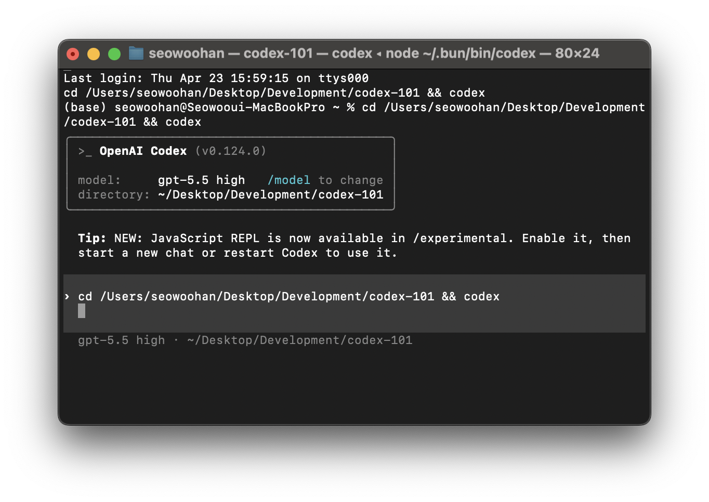
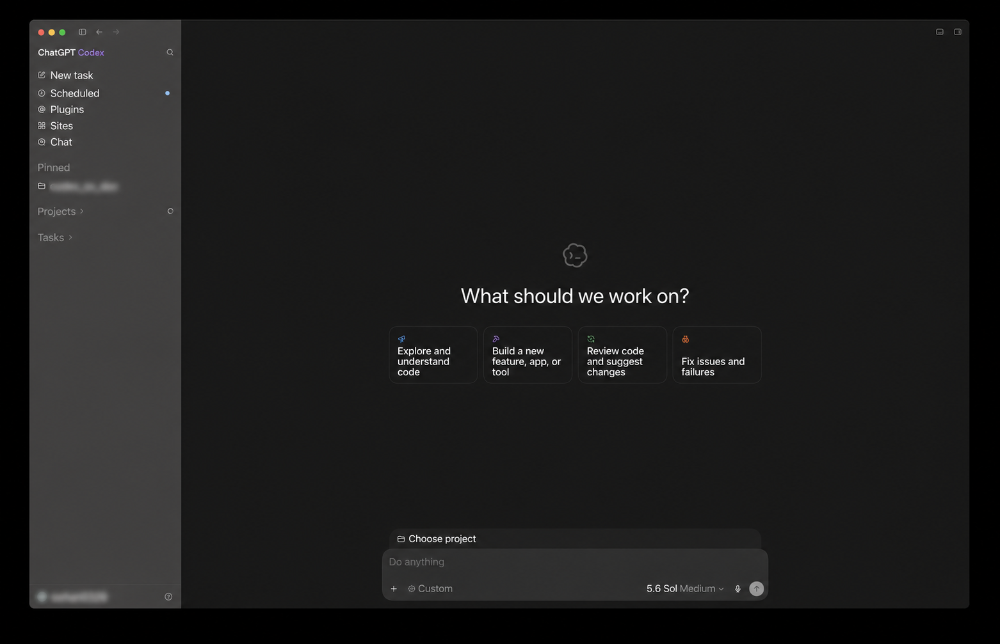
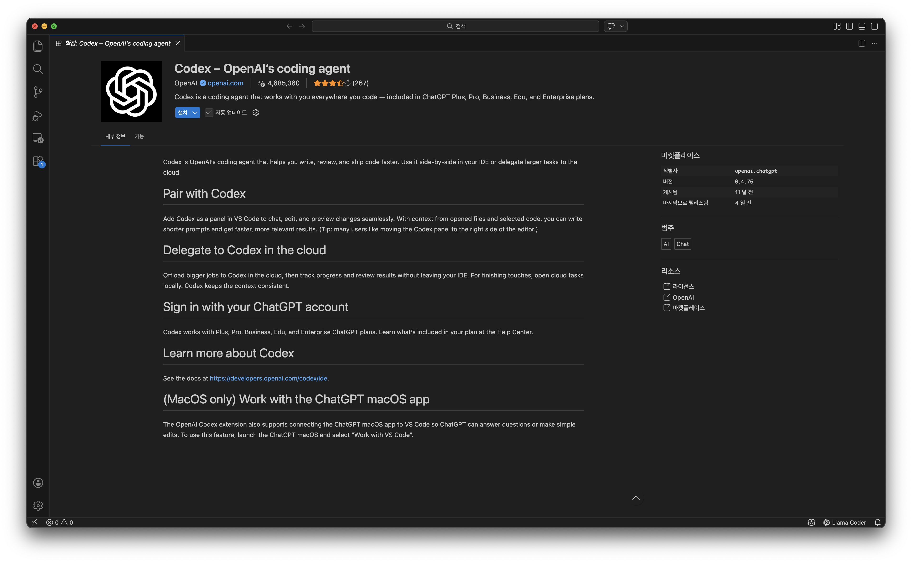
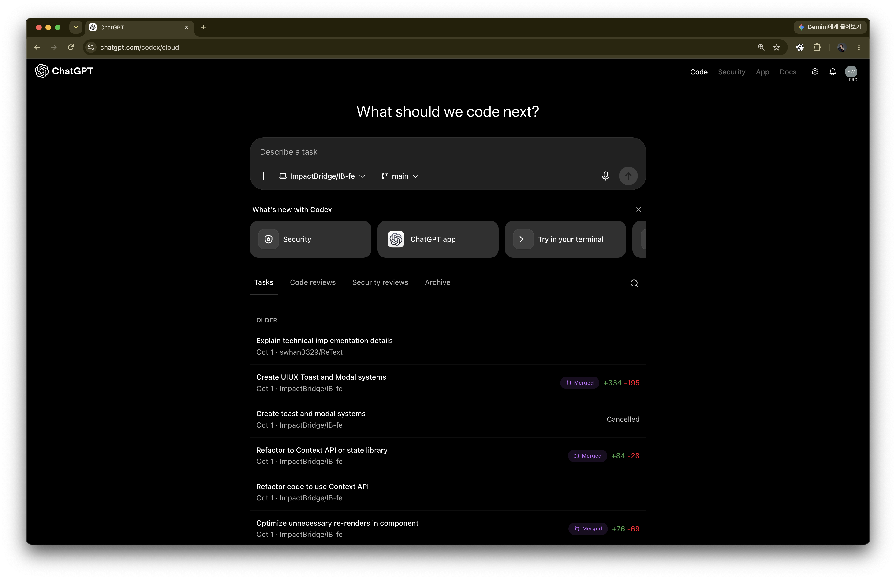

CLI 설치
# npm
npm install -g @openai/codex
# Homebrew (macOS)
brew install codex
# Update
npm update -g @openai/codex공식 문서 검수 · 2026년 3월 7일
CLI · Desktop App (macOS/Windows) · IDE Extension · Web Dashboard
최신 공식 문서를 직접 검수해 어디서 시작할지부터 AGENTS.md · MCP · 자동화까지 바로 적용할 수 있게 정리했습니다.
OpenAI Codex는 2025년 5월 codex-1(o3 기반)으로 재출시된 뒤, 2026년 3월 현재 대부분의 작업에 gpt-5.4를 기본 권장 모델로 쓰고 gpt-5.3-codex를 전문 코딩 모델로 함께 제공하는 에이전틱 코딩 플랫폼으로 발전했습니다.
"단순 코드 생성 → 소프트웨어 엔지니어 팀원"
Codex는 코드 자동완성 도구가 아닙니다. 여러 파일을 동시에 수정하고, 테스트를 실행하고, 결과를 검증하며, 스스로 디버깅하는 자율 에이전트입니다.
| 시기 | 이벤트 |
|---|---|
| 2025.04 | Codex CLI 오픈소스 공개 (TypeScript, Apache 2.0) |
| 2025.05 | Codex-1 출시 (o3 아키텍처), 클라우드 샌드박스 도입 |
| 2025.06 | Codex CLI Rust 리라이트 베타 공개 |
| 2025.08.27 | Codex IDE Extension(Visual Studio Code) 변경로그 첫 공개 |
| 2025.10.06 | DevDay 2025에서 GPT-5 Codex GA 발표 |
| 2025.12.18 | GPT-5.2-Codex 출시 (멀티파일 최적화, 컨텍스트 압축) |
| 2026.02.02 | Codex macOS App 출시 |
| 2026.02.05 | GPT-5.3-Codex 출시 |
| 2026.02.12 | Codex-Spark 리서치 프리뷰 공개 |
| 2026.03.04 | Codex Windows App 공개 |
| 2026.03.05 | GPT-5.4 공개 및 Codex 추천 기본 모델로 반영 |
터미널 기반(TUI) 로컬 에이전틱 코딩 및 CI/CD 자동화. 2025.04 출시.
데스크톱 앱(macOS + Windows). 멀티에이전트 커맨드 센터, 내장 워크트리. macOS(2026.02.02)·Windows(2026.03.04) 공개.
VS Code 사이드바에서 AI 코딩. 클라우드 위임 지원. 2025.08~09 변경로그 기준 공개.
ChatGPT 웹 대시보드. GitHub 연동, 자동 PR/코드 리뷰. 2025.05 출시.
전문 작업용 플래그십 프론티어 모델. GPT-5.3-Codex의 업계 최고 코딩 역량에 더 강한 추론, 도구 사용, 에이전틱 워크플로를 결합합니다.
복잡한 소프트웨어 엔지니어링을 위한 업계 최고 코딩 모델. 이 모델의 코딩 역량이 이제 GPT-5.4에도 반영됩니다.
텍스트 전용 리서치 프리뷰 모델. 거의 즉각적인 실시간 코딩 반복에 최적화되었으며 ChatGPT Pro 사용자에게 제공됩니다.
💡 Codex의 대부분 작업은 gpt-5.4부터 시작하는 것이 좋습니다. 강한 코딩, 추론, 네이티브 컴퓨터 사용, 더 넓은 전문 워크플로를 한 모델에 결합합니다. gpt-5.3-codex-spark는 ChatGPT Pro용 리서치 프리뷰로, 거의 즉각적인 코딩 반복에 최적화되어 있습니다.
코딩과 에이전틱 작업 전반을 위한 이전 범용 모델. 현재는 GPT-5.4로 대체되었습니다.
Codex에서 장기간 에이전틱 코딩 작업에 최적화된 모델.
다양한 도메인의 코딩 및 에이전틱 작업에 뛰어남. gpt-5.2로 대체됨.
Codex에서 장시간 실행되는 에이전틱 코딩 작업에 최적화. gpt-5.1-codex-max로 대체됨.
Codex에서 장시간 실행되는 에이전틱 코딩 작업에 최적화. gpt-5.1-codex-max로 대체됨.
GPT-5-Codex의 소형·비용 효율적 버전. gpt-5.1-codex-mini로 대체됨.
다양한 도메인의 코딩 및 에이전틱 작업을 위한 추론 모델. gpt-5.1로 대체됨.
⚠️ Codex는 위 모델들과 가장 잘 작동합니다. Chat Completions 또는 Responses API를 지원하는 다른 모델도 사용 가능하지만, Chat Completions API 지원은 향후 제거 예정입니다.
config.toml에서 기본 모델을 설정할 수 있습니다. 지정하지 않으면 추천 모델이 기본값입니다.
model = "gpt-5.4"CLI에서 /model 명령 또는 codex -m 모델명 플래그로 임시 변경 가능.
IDE에서는 입력창 아래 모델 선택기 사용.
codex -m gpt-5.4Codex 클라우드 작업의 기본 모델은 현재 변경할 수 없습니다.
| OS | macOS 12+, Ubuntu 20.04+, Windows 11 (CLI: WSL2, App: Native) |
| Node.js | v18+ |
| Git | 강력히 권장 |
| 계정 | ChatGPT Free / Go / Plus / Pro / Business / Edu / Enterprise |
| 플랜 | 가격 | Codex |
|---|---|---|
| Free | $0 | ✅* |
| Go | $8/mo | ✅* |
| Plus | $20/mo | ✅** |
| Pro | $200/mo | ✅** |
| Business | $25~30/user/mo | ✅** |
| Enterprise | 맞춤 가격 | ✅** |
* Free/Go도 한시적으로 Codex 접근 가능. ** Plus 이상(및 Edu/Enterprise) 한시적 2x Codex rate limits 제공.
# npm
npm install -g @openai/codex
# Homebrew (macOS)
brew install codex
# Update
npm update -g @openai/codex# ChatGPT 계정 로그인 (권장)
codex login
# 또는 API 키 사용
export OPENAI_API_KEY="your-api-key-here"업데이트(2026.03.04): Codex Windows 앱이 공개되었습니다. 현재는 미국/영문 지역 및 x86 장치에서 지원됩니다.
Windows App 공식 문서 보기
# 인터랙티브 모드
codex
# 프롬프트와 함께
codex "explain this codebase"
# 특정 디렉토리
codex --cd /path/to/project
# 파일 참조
@src/components/Button.tsx 리팩토링해줘
# 쉘 명령어 실행
!npm test
macOS 앱은 2026년 2월 2일 출시, Windows 앱은 2026년 3월 4일 업데이트로 공개되었습니다. 멀티에이전트 작업을 위한 데스크톱 커맨드 센터입니다.
| 모드 | 실행 위치 | 설명 |
|---|---|---|
| Local | 내 맥 | 현재 프로젝트 디렉토리에서 직접 작업 |
| Worktree | 내 맥 | Git Worktree로 변경사항 격리. 병렬 작업에 적합 |
| Cloud | 클라우드 | 원격 클라우드 환경에서 실행 |

VS Code, Cursor, Windsurf, JetBrains IDE에 통합되는 AI 코딩 에이전트.
| 모드 | 파일 접근 | 코드 수정 | 명령 실행 |
|---|---|---|---|
| Chat | △ 수동 컨텍스트만 (@file/열린 파일/선택 영역) | ❌ | ❌ |
| Agent | ✅ | ✅ (승인 필요) | ✅ (승인 필요) |
| Agent (Full Access) | ✅ | ✅ | ✅ |
Chat 모드는 자동으로 파일을 탐색/수정하지 않지만, @file·열린 파일·선택 영역을 컨텍스트로 포함해 질문할 수 있습니다.

ChatGPT 웹 인터페이스에서 Codex를 사용하여 클라우드 환경에서 코딩 작업을 할 수 있습니다.
Codex Web에서 GitHub 연결 후 리뷰 대상 저장소를 선택하고 "Automatic reviews"를 활성화하면 새 PR마다 자동 리뷰됩니다. AGENTS.md 규칙 기반 커스터마이징 가능.
| 모드 | 파일 읽기 | 파일 수정 | 명령 실행 | 네트워크 |
|---|---|---|---|---|
| Suggest 기본 | ✅ | ❌ | ❌ | ❌ |
| Auto-Edit | ✅ | ✅ | ❌ | ❌ |
| Full Auto | ✅ | ✅ | ✅ | ❌ |
codex --approval-mode suggest
codex --approval-mode auto-edit
codex --approval-mode full-auto보안: macOS는 Apple Seatbelt, Windows는 Windows Sandbox, Linux는 Docker 컨테이너 샌드박싱. Full Auto에서도 네트워크 기본 차단.
아래 목록은 CLI / IDE / App 공식 문서를 교차 확인해 분리한 명령어입니다. 서로 이름이 비슷해도 동작이 다를 수 있습니다.
/model |
활성 모델 변경 (가능한 경우 reasoning effort 포함) |
/permissions |
승인/권한 정책 변경 |
/agent |
활성 에이전트 스레드 전환 |
/plan |
플랜 모드 전환 (선택적으로 인라인 프롬프트 포함) |
/compact |
대화 요약으로 컨텍스트 토큰 절약 |
/status |
세션 설정/토큰 사용량 확인 |
/review |
워크트리 코드 리뷰 실행 |
/feedback |
진단 로그와 피드백 전송 |
CLI에는 이외에도 /personality, /experimental, /init, /mention, /mcp, /diff, /fork, /resume, /new, /quit 등이 있습니다. /approvals는 별칭으로 동작하지만 팝업 목록에는 표시되지 않습니다.
/auto-context |
자동 컨텍스트 포함 토글 |
/cloud |
클라우드 모드로 전환 |
/cloud-environment |
클라우드 환경 선택 (cloud 모드에서만) |
/local |
로컬 모드로 전환 |
/review |
변경사항 리뷰 모드 시작 |
/status |
스레드 ID/컨텍스트/레이트리밋 확인 |
/feedback |
피드백 다이얼로그 열기 |
/plan-mode |
멀티스텝 계획용 plan mode 토글 |
/mcp |
연결된 MCP 서버 상태 열기 |
/review |
변경사항 리뷰 모드 시작 |
/status |
스레드 ID/컨텍스트/레이트리밋 확인 |
/feedback |
피드백 다이얼로그 열기 |
App 문서 기준으로 명령은 환경/권한에 따라 달라질 수 있으며, 활성화된 skill은 슬래시 목록에 추가될 수 있습니다.
아래 단축키는 CLI(TUI) 기준입니다. App은 OS별 단축키(macOS Cmd, Windows Ctrl)를, IDE는 각 IDE 키맵을 사용합니다.
| Esc ×2 | 입력창이 비었을 때 이전 사용자 메시지 편집 |
| Ctrl+C | 세션 종료 (/exit) |
| Ctrl+G | 프롬프트 에디터 열기 (VISUAL/EDITOR) |
공식 문서: CLI slash commands · IDE slash commands · App commands
Codex에게 프로젝트 맥락과 규칙을 알려주는 핵심 파일. CLI, App, IDE, Web 모두에서 참조합니다.
# AGENTS.md 위치 및 우선순위
AGENTS.override.md → 최우선
./AGENTS.md → 가장 가까운 파일
../AGENTS.md → 상위 디렉토리
~/.codex/AGENTS.md → 전역 개인 설정# 자동 생성
codex init# ~/.codex/config.toml
model = "gpt-5.4"
model_provider = "openai"
approval_policy = "on-request"
sandbox_mode = "workspace-write"
model_reasoning_effort = "medium"
# 프로필
[profiles.fast]
model = "gpt-5.3-codex-spark"
model_reasoning_effort = "low"
[profiles.deep]
model = "gpt-5.4"
model_reasoning_effort = "high"codex --profile fast
codex --profile deepMCP는 Codex가 외부 도구와 문서를 읽고, 브라우저를 제어하고, 원격 시스템과 연결할 수 있게 해주는 표준 프로토콜입니다.
Codex는 MCP 없이도 사용할 수 있습니다. 하지만 처음 시작하는 사람이라면 OpenAI Docs MCP 하나만 연결해도 설치, 모델, 명령어, API 문서를 훨씬 정확하게 찾게 됩니다.
# 1) 초보자 추천: OpenAI Docs MCP
codex mcp add openaiDeveloperDocs --url https://developers.openai.com/mcp
# 2) 연결 확인
codex mcp list
codex mcp get openaiDeveloperDocs
# 3) UI 작업이 많다면 Playwright도 추가
codex mcp add playwright -- npx --yes @playwright/mcp@latest이 문장이 없으면 Codex에게 매번 문서 MCP를 명시적으로 사용하라고 요청해야 할 수 있습니다.
Always use the OpenAI developer documentation MCP server for OpenAI API, ChatGPT Apps SDK, Codex, and related product questions unless I explicitly say otherwise.MCP가 실제로 동작하는지 확인하려면, 최신 OpenAI 문서에서 특정 항목을 찾아 요약하게 해보는 것이 가장 빠릅니다.
# 연결 후 테스트 프롬프트
OpenAI Responses API의 tools 요청 스키마를
OpenAI developer docs에서 찾아서
필수 필드만 bullet 5개로 요약해줘.CLI와 IDE Extension은 MCP 설정을 공유합니다. 전역은 ~/.codex/config.toml, 프로젝트별로만 쓰고 싶다면 ./.codex/config.toml을 사용할 수 있습니다. 더 엄격하게 관리하려면 enabled, required, enabled_tools, disabled_tools 같은 옵션도 설정할 수 있습니다.
# 전역 설정: CLI와 IDE Extension이 공유
~/.codex/config.toml
[mcp_servers.openaiDeveloperDocs]
url = "https://developers.openai.com/mcp"
# 프로젝트에만 적용하고 싶다면
./.codex/config.toml| 서버 | 용도 | 추천 순서 |
|---|---|---|
| OpenAI Docs | OpenAI 공식 개발자 문서를 검색하고 읽기 | 가장 먼저 |
| Playwright | 브라우저 열기, 클릭, UI 상태 확인 | UI 테스트가 필요할 때 |
| GitHub | 원격 PR, 이슈, 저장소 메타데이터 다루기 | Git만으로 부족할 때 |
| Figma | 디자인 파일과 컴포넌트 스펙 확인 | 디자인 협업이 많을 때 |
codex resume --last # 마지막 세션
codex resume # 목록에서 선택
codex resume <ID> # 특정 세션
# 세션 내 명령
/permissions /mcp /status /review /feedback /compact# codex exec - 실행 후 자동 종료
codex exec "Review this PR" --output stdout
codex exec "Fix all TODOs" --approval-mode full-autoGitHub 연결 + 리뷰 대상 저장소 선택 후 "Automatic reviews" 활성화 → 새 PR마다 자동 리뷰, AGENTS.md 규칙 기반 커스터마이징.
이제 프롬프트는 문장 요령보다 에이전트 계약을 설계하는 일에 가깝습니다.
GPT-5.4는 기본 성능이 강하지만, 실제 차이는 출력 형식, 도구 사용 기대치, 완료 기준, 검증 루프를 얼마나 명확히 정의하느냐에서 납니다.
레퍼런스: Prompt guidance for GPT-5.4 · Prompt engineering
GPT-5.4의 프롬프팅은 말을 예쁘게 하는 기술보다, 에이전트가 어떤 방식으로 끝까지 일해야 하는지 계약을 설계하는 쪽에 더 가깝습니다.
길게 지시하는 것보다 무엇을 어떤 순서와 형식으로 반환해야 하는지 고정하는 편이 더 큰 효과를 냅니다.
되돌릴 수 있고 저위험인 다음 단계는 자동으로 진행하고, 외부 부작용이나 파괴적 변경만 별도 승인을 받게 해야 합니다.
정확성이 중요하면 도구를 한 번 쓰고 멈추지 않게 하고, 선행 조회, 빈 결과 복구, 완료 판정까지 묶어줘야 합니다.
품질이 부족할 때 무조건 reasoning effort부터 올리기보다, 먼저 계약과 검증 규칙을 보강하는 것이 더 효율적입니다.
가장 작은 프롬프트로 시작하고, incomplete execution, format drift, citation hallucination처럼 실제로 관측한 실패를 고치기 위해서만 블록을 추가하세요.
가장 큰 개선 효과는 출력 형식, 자율 진행 기준, 충돌하는 지시의 우선순위를 짧고 명확한 계약으로 적는 데서 나옵니다.
무엇을 몇 개 섹션으로 어떤 순서와 포맷으로 반환할지 먼저 고정하세요.
저위험이고 되돌릴 수 있는 다음 단계는 진행하고, 파괴적 변경이나 외부 부작용만 승인을 받게 하세요.
새 사용자 지시는 예전 스타일보다 우선하되, 안전·정직·권한 규칙은 예외로 두는 식으로 우선순위를 분명히 합니다.
중간에 지시가 바뀌면 이번 응답에만 적용되는지, 남은 세션 전체에 적용되는지 범위를 적어 주세요.
<assistant_contract>
- Return exactly the requested sections, in the requested order.
- Keep progress updates short and outcome-focused.
- If the next step is reversible and low risk, continue without asking.
- Ask first for destructive changes, production writes, purchases, sending, or deletions.
- If a newer user instruction conflicts with an older one, follow the newer one.
- Preserve earlier instructions that still do not conflict.
</assistant_contract>모든 블록을 항상 넣지 말고, 실제로 실패를 줄여주는 조합만 남기는 편이 좋습니다.
긴 작업에서 흔한 실패는 “대충 끝난 것처럼 보이지만 실제로는 덜 끝난 상태”입니다. tool persistence와 verification을 같이 설계해야 합니다.
정확도와 완결성에 도움이 되면 도구를 계속 쓰고, 한 번의 조회 결과만으로 너무 빨리 멈추지 않게 합니다.
최종 행동이 명확해 보여도 선행 조회나 prerequisite step이 필요한지 먼저 확인해야 합니다.
독립적인 조회만 병렬화하고, 앞 단계 결과가 다음 행동을 바꾸는 경우는 순차 실행으로 남겨야 합니다.
배치, 목록, 페이지네이션 작업이라면 예상 범위와 처리 상태를 내부적으로 추적하도록 요구하세요.
끝나기 전에 요구사항 커버리지, grounding, 포맷, 안전성 체크를 한 번 더 돌리게 하세요.
<agent_execution_loop>
- Use tools whenever they materially improve correctness or completeness.
- Do not skip prerequisite lookups just because the final action seems obvious.
- If a lookup is empty or suspiciously narrow, retry with one broader or alternate strategy.
- Treat the task as incomplete until every requested item is covered or explicitly marked blocked.
- Before finalizing, verify requirements coverage, grounding, and output format.
</agent_execution_loop>공식 가이드의 핵심은 모든 작업에 같은 프롬프트를 쓰지 말고, task shape별로 계약을 다르게 잡으라는 점입니다.
검색과 합성이 필요한 작업은 sub-question 분해, 재검색, citation gating을 따로 줘야 합니다.
JSON, SQL, XML처럼 파싱 민감한 출력은 “그 형식만 반환”과 마감 전 self-check를 함께 요구하세요.
셸 도구, 편집 도구, 사용자 업데이트 빈도, 검증 강도를 명확히 두면 코딩 에이전트의 일관성이 올라갑니다.
성격(personality)은 세션 기본값으로, 채널/톤/길이 제한은 응답 단위 제어로 분리하는 편이 좋습니다.
<research_mode>
- Break the question into 3-5 sub-questions.
- Search each sub-question and follow one deeper lead if needed.
- Cite only sources retrieved in this run.
- If results are thin, retry once with a broader query before concluding.
- Stop only when more search is unlikely to change the answer.
</research_mode><coding_agent_contract>
- Persist until the requested change is implemented and verified.
- Use tools when they improve correctness, not just convenience.
- Give the user short updates only at phase changes.
- Run the lightest relevant test, build, or lint step before stopping.
- Report what changed, what was verified, and what remains risky.
</coding_agent_contract>reasoning effort는 첫 번째 해결책이 아니라 마지막 미세 조정 노브에 가깝습니다. 프롬프트 계약과 검증을 먼저 손보는 편이 더 값집니다.
| reasoning_effort | 언제 여기서 시작할까 |
|---|---|
none |
짧은 변환, 실행 중심 작업, 빠른 tool routing, latency가 중요한 플로우 |
low |
약간의 해석은 필요하지만 속도도 중요한 작업 |
medium |
다문서 합성, 충돌 해소, 정책/전략성 글쓰기, 복잡한 코딩 계획 |
high / xhigh |
장기 에이전트 작업에서 eval로 분명한 이득이 있을 때만 선택 |
phase는 preamble과 final answer를 구분해 긴 도구 작업의 조기 종료를 줄이는 데 도움을 줍니다.품질이 너무 literal하거나 중간에 멈춘다면 reasoning을 올리기 전에 completeness, tool persistence, verification, citation rules를 먼저 붙여 보세요.
아래 템플릿은 Codex 101에서 바로 가져다 쓸 수 있는 최소 골격입니다. 필요 없는 블록은 빼고, 실측 failure mode가 있는 블록만 추가하세요.
Update this codebase to [goal].
Constraints:
- Work only in the files that are relevant.
- Keep the final response concise.
- If the request is clear and low risk, proceed without asking.
Execution contract:
- Do prerequisite lookups before editing.
- Persist until the change is implemented and verified.
- Run the lightest relevant verification step before finalizing.
- If blocked, say exactly what is missing.Answer this question with evidence: [question]
Research contract:
- Break it into 3-5 sub-questions.
- Search each one and retry once if results are thin.
- Cite only sources retrieved in this run.
- Distinguish supported facts from inference.
- Stop only when more search is unlikely to change the conclusion.# 추론 수준 조절
/model gpt-5.3-codex-spark # 초고속
/model gpt-5.4 # 대부분의 복잡한 작업
# 멀티 디렉토리
codex --add-dir /path/to/libs
# 웹 검색(인터랙티브에서 --search 전역 옵션 사용)
codex --search "optimize with Next.js 15"
# 컨텍스트 압축
/compact| 특성 | Codex | Cursor | Claude Code |
|---|---|---|---|
| 인터페이스 | CLI+App+IDE+Web | CLI(beta) + IDE + Background Agents | CLI + IDE + Web/iOS(리서치 프리뷰) + Slack |
| 오픈소스 | ✅ (CLI) | ❌ | ❌ |
| 주요 모델 | GPT-5.4 | 선택한 제공 모델에 따라 다름 | Claude Opus/Sonnet/Haiku 계열 (플랜별) |
| 클라우드 실행 | ✅ | ✅ Cloud/Background Agents | ✅ Web/iOS(리서치 프리뷰) + GitHub/GitLab CI 러너 |
| GitHub 통합 | ✅ 자동 PR/리뷰 | ✅ GitHub App | ✅ GitHub Actions + GitLab CI/CD |
| 멀티에이전트 | ✅ (App) | ✅ 비동기 Background Agents | ✅ Subagents(위임형 멀티에이전트) |
| MCP | ✅ | ✅ | ✅ |
| 가격 | ChatGPT 플랜 포함(사용량 한도) | Hobby Free, Pro $20, Pro+ $60, Ultra $200, Teams $40/user, Enterprise custom | Pro/Max/Team/Enterprise 포함 또는 Console API 종량제 |
모두 같은 Codex App Server 프로토콜을 사용하지만 인터페이스가 다릅니다. CLI는 터미널, App은 macOS/Windows 데스크톱 멀티에이전트, IDE는 VS Code 통합, Web은 브라우저에서 GitHub 연동.
네! ChatGPT 무료 계정으로도 Codex CLI, App, Web 모두 한시적 무료 접근이 가능합니다 (5시간당 약 10~30회). 안정적 사용을 위해서는 Plus($20/월) 이상을 권장하며, API Key 종량제도 지원됩니다.
OS 수준 샌드박싱 + 네트워크 차단이 적용됩니다. Git으로 관리하면 언제든 되돌릴 수 있습니다.
2026.02 리서치 프리뷰로 공개된 텍스트 중심 코딩 모델입니다. 빠른 반복 작업에 초점을 둔 옵션이며, 최신 제공 범위는 플랜/문서 기준으로 확인하세요.
Codex CLI는 오픈소스(Rust)이며, 타사 모델 프로바이더(Ollama 등)를 연결할 수 있지만, 품질은 OpenAI 모델보다 떨어집니다.